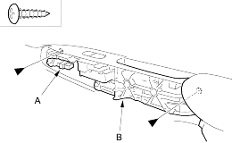
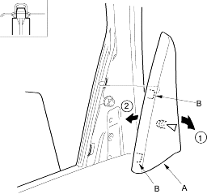
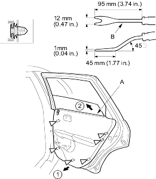
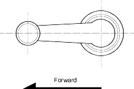

- Disconnect the power window switch connector (A) (for some models) and remove the screws from the grip base (B).
| Fastener Locations |
 : Screw, 2 : Screw, 2 |

- Pull out the rear edge on the quarter inner trim (A) to release the clip and pull out the front edge forward to release the hooks (B), then remove the trim.
Fastener Location  : Clip, 1
: Clip, 1

- Release the clips that hold the door panel (A) with a commercially available trim pad remover (B), then remove the door panel by pulling it upward. Remove the door panel with as little bending as possible to avoid creasing or breaking it.
| Fastener Locations |
| : Clip, 6 |

- Install the door panel in the reverse order of removal and note these items:
- Replace any damaged clips.
- Make sure the connector is plugged in properly (for some models) and the rod is connected properly.
- If applicable, install the regulator handle so it points forward with the glass fully closed.
